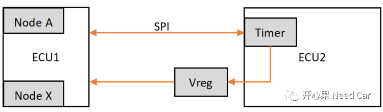
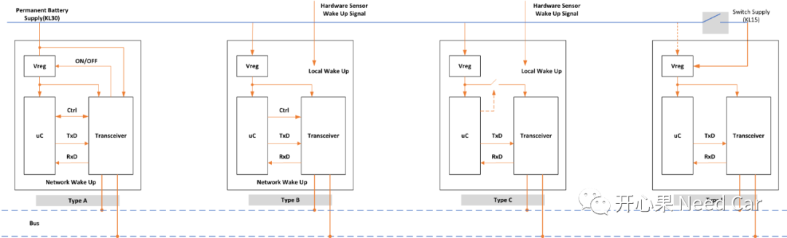
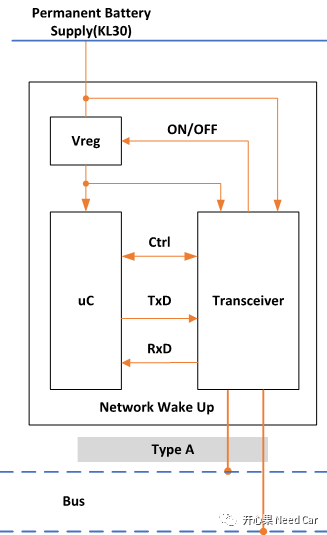
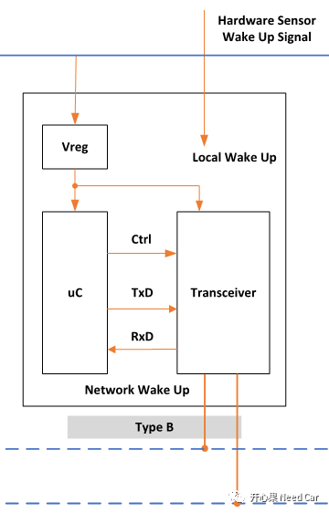
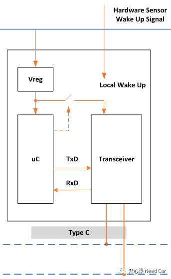
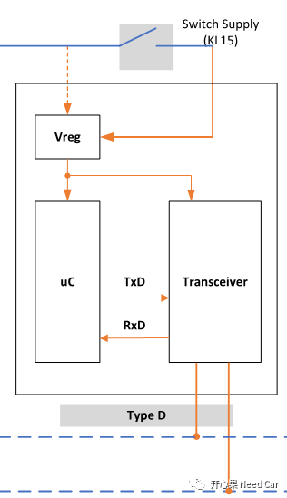

我想玩Autosar嵌入式开发的朋友都知道，Autosar中有NM模块，也知道为什么要有网络管理，但是大家未必都能说清楚节点（Node）的唤醒方式，本文通过分析节点供电方式、网络唤醒源来聊聊节点的唤醒方式。

唤醒源
开发的过程中，提到网络管理，我们首先就得明确唤醒源有哪些，如果搞不清，查bug可能有的折腾。一般来说，唤醒源会分为本地唤醒源和远程唤醒源。前面已经说过，唤醒源能唤醒ECU，而未必能唤醒网络，唤醒ECU是唤醒网络的必要不充分条件，可以参考前文：（节点唤醒==网络唤醒）？FALSE:TRUE；。如下说一下个人对两种类型唤醒源的理解。
本地唤醒源：和硬线相关的唤醒方式一般称为本地唤醒源。如：KL15硬线，硬件传感器信号（如：脚踢门，后备箱打开）。
远程唤醒源：简单说就是和总线信号相关的唤醒方式。比如收到网络管理报文或者指定诊断报文，或者包含KL15信号的应用报文（有些节点没有KL15硬线，而是网关转发包含KL15信号的应用报文唤醒）。


节点类型
一个ECU中包含多个节点（Node），这个大家要清楚，不要将ECU和节点混为一谈。举例来说：一个ECU有3路CAN，2路Flexray，1路Ethernet，应该说该ECU有6个节点。也可以具体说，该ECU有3个CAN节点，2个Flexray节点，1个Ethernet节点。总之，在表述的时候要尽可能准确，他人在表达不到位的情况下，我们也要知道ta表达的真实意图。
一般来说，可以根据节点的启动方式、静态电流的消耗以及启动时间分为4种唤醒方式，这里分为A、B、C、D四种类型。提示：图片可以放大看。

也有按照唤醒源组合方式分类的说法，即本地唤醒源和远程唤醒源组合成四种唤醒方式。如下说说这四种类型节点网络唤醒的方式。
Node TypeA：

Node TypeB：

这种类型的节点常连KL30，可以通过硬线和网络总线唤醒，即这两种方式均可以使得uC供电，即ECU唤醒。如果是硬线唤醒，如KL15硬线，网络直接唤醒；如果是网络总线唤醒，则需要进一步判断唤醒源的有效性，即网络不一定唤醒。一般来说，该节点休眠时会将transceiver的工作模式设置为Sleep Mode，当然，这需要看transceiver是否有Sleep Mode。以CAN Transceiver为例，NXP TJA1145有Sleep Mode，可以通过SPI设置其进入该模式。而NXP TJA1143则没有，一般会进入Standby Mode，即伪Sleep Mode。
Node TypeC：

这种类型的节点常连KL30，可以通过硬线唤醒。相对于Node TypeB，Node TypeC在网络休眠时更节能，因为可以完全将Transceiver供电切断。
Node TypeD：

这种类型的节点不常连KL30，受控于KL15硬线，如果KL15断开则整个主芯片以及Transceiver均断电，而无法工作。相对其它唤醒方式，这种节点的网络启动时间要更长，因为uC和Transceiver均是冷启动。

写在最后
嵌入式Autosar开发中，如果是作为供应商的角色，在拿到OEM或者甲方需求时，要清楚自家产品的唤醒方式，而这需要看一下自家产品的原理图和使用的uC、Transceiver类型才能更好的开发符合需求的Code。
往期精彩推荐：

AUTOSAR网络管理与Transceiver/Controller关系